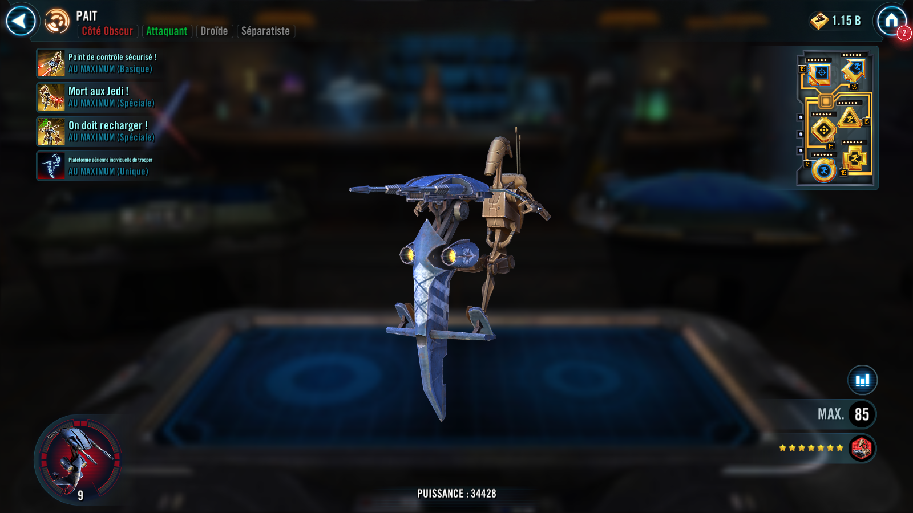
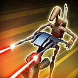
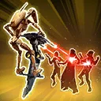
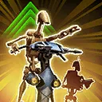
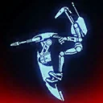

STAP
Used as a reconnaissance and patrol vehicle by the Trade Federation and the Separatists, the STAP was instrumental for gathering intel, especially during the invasion of Naboo
Used as a reconnaissance and patrol vehicle by the Trade Federation and the Separatists, the STAP was instrumental for gathering intel, especially during the invasion of Naboo


Deal Physical damage to target enemy and inflict Target Lock for 2 turns. If they already had Target Lock, instead inflict Pinned for 2 turns which can't be copied, dispelled, or prevented, and this attack can't be evaded.
Pinned: Can't gain bonus Turn Meter and has -25% Speed, doesn't stack with Breach or Speed Down

Deal Physical damage to all enemies, which can't be evaded by Jedi. Inflict Provoked on all enemies for 2 turns. Deal damage again to Pinned enemies.

Recover 20% Health and Protection and gain 5 stacks of Overcharge (max 5), which can't be copied, dispelled, or prevented. Target other ally attacks, then STAP assists.

STAP gains 10 Speed for each stack of Overcharge on them.
If all allies were Separatist Droids at the start of battle, whenever an ally inflicts Pinned or Target Lock on an enemy, they also deal bonus damage equal to 10% of that enemy's Max Health to that enemy, which can't be evaded.
Whenever STAP uses an ability other than We Need To Recharge!, they lose a stack of Overcharge.
Whenever STAP or an allied Separatist Droid Tank takes True damage from an enemy, all Separatist Droid allies lose 15% Turn Meter (limit once per enemy per turn)
Omicron Boost : While in Grand Arenas and all allies are Separatist Droids: STAP gains a bonus turn at the start of battle and an additional bonus turn whenever an enemy takes their first turn.
When STAP gains Overcharge, all allies gain 20% Max Health (stacking, persists through defeat) for the rest of battle and recover 10% Health and Protection.
Enemy Clone Troopers have -30% Offense and when they are inflicted with Pinned or Target Lock they also receive bonus damage equal to 10% of that enemy's Max Health to that enemy, which can't be evaded.
Separatist Droid allies no longer lose Turn Meter when STAP or allied Separatist Droid Tanks take True damage from enemies.